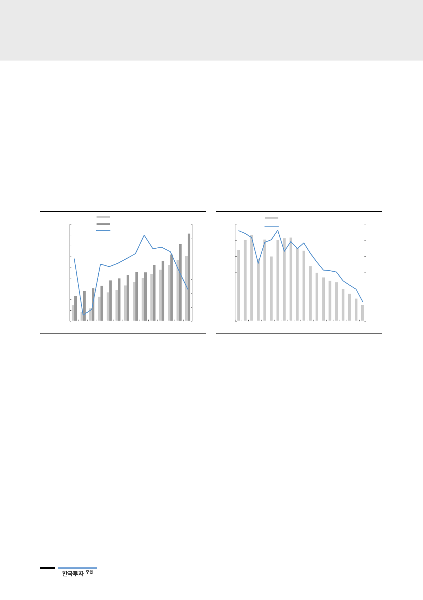

II. 대규모 증설로 장기침체기 진입
공급 충격은 장기화될 전망
향후에도 에틸렌 스프레드는 축소 기조가 고착화될 전망이다. 2018년 세계 에틸
렌 가동률은 타이트한 94%에서 2020년 89%까지 5%p 하락할 것이다. 세계 에
틸렌 수요는 매년 연간 4백만톤 초반 수준으로 증가할 전망이지만, 신규설비 가
동에 따른 공급 증가분은 매년 수요 증가분을 큰 폭으로 상회할 전망이기 때문이
다. 세계 GDP 성장률 대비 에틸렌 수요 탄성치는 0.8배로 가정해 올해 3.0%,
2020년에는 2.6%까지 수요 성장률이 둔화될 전망이다. 무역분쟁, 환경문제에 따
른 플라스틱 규제를 감안할 때 수요 탄성치는 1.0배를 하회할 수밖에 없다.
[그림 5] 세계 에틸렌 수급 장기 하락국면 진입
('000 톤)
190,000
180,000
170,000
160,000
150,000
세계 에틸렌 수요(좌)
세계 에틸렌 공급(좌)
세계 에티렌 설비 가동률(우)
(%)
98
96
94
92
140,000
90
130,000
88
120,000
110,000
86
100,000
1Q16
4Q16
3Q17
2Q18
84
1Q19F
자료: 한국투자증권
[그림 6] 공급부담으로 에틸렌 스프레드 축소 지속될 전망
(달러/톤)
800
에틸렌 스프레드(좌)
세계 에틸렌 설비 가동률(우)
(%)
96
700
94
600
92
500
90
400
88
300
86
200
84
1Q16 4Q16 3Q17 2Q18 1Q19F 4Q19F 3Q20F
자료: 한국투자증권
연말연초 중국발
재고확보 수요강세
기대하기 어려움
단기적으로 부진했던 3분기 성수기 수요를 감안해 연말연초 재고확보에 따른 중
국발 수요강세를 기대하는 시선이 있다. 그러나 연말연초 신규증설 규모는 이란
등 영향력 없는 설비를 제거하더라도 4백만톤/년을 초과한다. 이는 연간 수요 증
가분에 해당하는 규모로 에틸렌 스프레드에 있어서 하락요인이다. 또한 2020년
에는 중국의 신규증설이 본격적으로 가동을 시작할 것으로 전망되고 그 이후는
정유사들의 석유화학설비 증설 영향까지 가세할 것이다. 에틸렌의 장기침체기는
현재 증설동향을 감안할 때 피하기 어렵다.
4